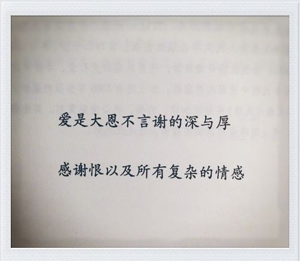
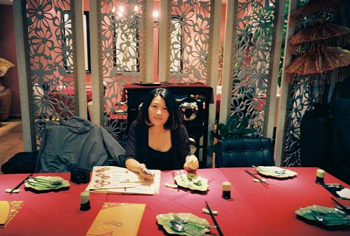
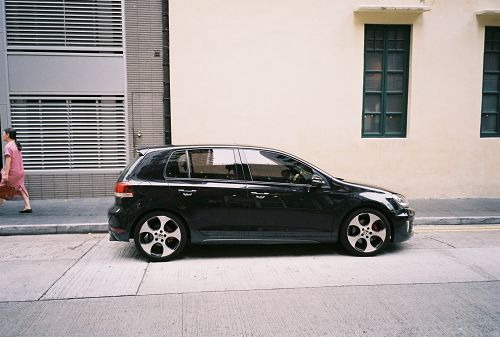
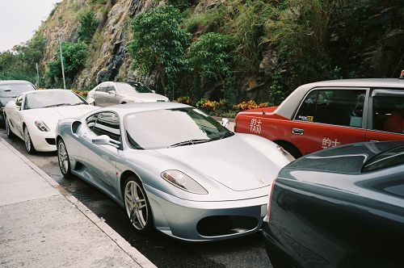
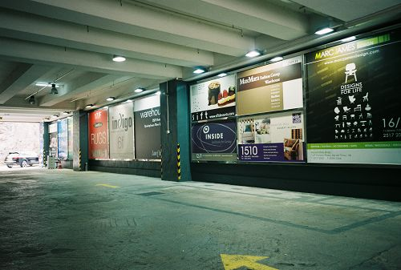
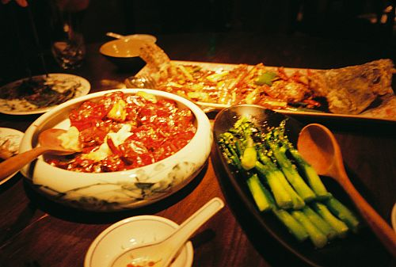

Archives : 2011-10
每日白檀香 @ Oct 24, 2011
家里各种香快没了，收到问问送的“每日白檀香”，真好，各种喜欢。唯一的缺点太短，烧一会儿就没了，在家的时候想一直有白檀香的味儿环绕着，得不停地换新香上去。对于我这种急性子，即使燃烧2小时的盘香也觉得短。。。到家先点支香，真正让人感到神经舒缓，正如maggie所说：“不点香，书都看不进去。”

等待深秋 @ Oct 22, 2011

DRESS BLOG @ Oct 21, 2011
问问写《K PAX星球》观影感里有一句：“精神病院大概是最徜徉人情味的地方。因为一个精神病患者对另一个患者说的话，他们都彼此坚信不移。”
我们这些所谓的正常人......会有越活越“冷”的感受。
好在星期五再次到来，明天撒欢，放风，快乐，睡美容觉。

学做菜 @ Oct 20, 2011
按照“小白素食记录”的教授的做法，午饭用了二十多分钟做的香菇烧栗子： 生栗子去皮，上锅蒸10分钟，香菇掰成小块，青椒红椒去蒂去籽切块待用。锅烧热下少许油，下两片姜爆香，下香菇炒出香味，然后下入栗子翻炒一下。加水快要没过菜，水烧开后加1/2小匙盐、1小匙生抽和1小匙老抽调味，盖上锅盖焖10分钟，然后加入青椒红椒翻炒收汁即可。

新袜子 @ Oct 18, 2011
人家穿上了新袜子，走在地板上指甲敲击地面的哒哒声没了。主人们不必给宠物断指，穿上袜子就好了，冬天的瓷砖地面也挺冷的，预防关节炎也能起点小作用。


*周末* @ Oct 16, 2011
周末去做了法式指甲，带狗狗到店里美容洗澡，洗脏衣服，晒被子枕头，给头发做护理，洗车镀膜。周日中午众女友聚餐海底捞，欢迎maggie意大利归来。带了Canon 85mm/F1.2L USM II镜头去，不得不说此镜头的表现真是让人热泪盈眶啊，不愧为“人像皇”。
每每周六懒觉后醒来，都会想想这个周末都有哪些事情要做。心里排一个明细，今天做什么，明天做什么。然而事情总会落下一两件，恰如人生总有缺憾一样。

所以 @ Oct 14, 2011
“人只要活着，就必须对付绝望，只要对付绝望，生命就会呈现真实和美的生动姿态。只要生命能够生动的真实和美，那么一起都有可能性...”
--《池莉 . 所以》
When the pain of holding on is greater than the pain of letting go, it's time to let go.

（照片来自凤凰卫视“沈星”）
DRESS BLOG @ Oct 14, 2011
同事笑嘻嘻地跑来说：“今天TB‘我的淘宝’页面，武林外传的几个小人儿在跳舞。欢欣鼓舞啊，终于7天工作日就要结束了。”节后她烫了卷发，衬得面孔异常柔美。她认为如果不上班的话，就不能每天打扮美美的，会失去某些束缚。赞成另一女友地观点“不上班，与生活品质不矛盾。”
星期五，这种豹纹搭配，还能hold住吧？

九月·上海 @ Oct 14, 2011
9月去上海出差，为机动出发时间，决定早晨临时去南京火车站买车票。问有没有动车？窗口的大婶气急败坏地答：“早就没有动车了，只有高铁，你要在这里能买到动车的票，我免费送给你。。。”火车站的服务堪称古墓级，仿佛还在80年代的国营单位，说到底没有竞争就没有压力，服务意识与火车站的新设施不搭调。每每身处火车站总有种逃难的感觉。
晚上和女友们在泰国料理店吃饭，关键的人物照都糊了，关键时刻还是数码保险些。无论胶片机还是数码机，都需要一双稳稳地铁手。有时可能还需要一些稳定的情绪，深深呼口气，屏住呼吸，斟酌一番，方能拍出小鱼灯的清晰照啊。
高铁驶过江南的农村，照片下还有一丝文艺气息，肉眼望去却逊色许多。

最高时速了吗？

大律师和她的表妹都是气质很好的美人儿，表妹在北京做形象设计。这糊了的照片让人恼火。据说当天有某网站街拍找她们俩拍照，看手机里的效果很是惊人，我还需要努力才能拍好人像。这些天买了德国人写的《在照片中学习人像摄影》，希望阅读后能有所收获。

晚上与Angie同居，深更半夜地居然一起收拾满屋子的衣服。她比往年忙碌许多，但依然还是那副满不在乎的摸样。见到久违的TOBY，瘦了，半夜两人带它去散步，因为到家晚，其它小盆友早已回家，它趴在花坛边有点失落，不过终于还是遇到了一只剔成光猪状的古牧，可惜TOBY对它没兴趣。呵呵~希望Angie搬家后，我能帮忙布置屋子。

餐厅入门处好看的鱼灯，大图非常美，点击这里，胶片表现出来的画面远远比数码要丰富许多。

@Hong Kong @ Oct 13, 2011
香港尖沙咀广东道人山人海，夜晚的旺角、油麻地同样人山人海，不过不同的是前者内地游客多，后者当地人多。有朋友说爱香港的油麻地、庙街，那儿可以感受到地道的香港氛围，还有当地平民美食品种花样繁多。说到旺角，马上会想起张家辉在《旺角监狱》的片尾跪在清晨街头的场景。去旺角只为尝一尝“通达食店”的招牌小吃，它在油麻地地铁站A2出口一出来便是，而且同一招牌，左右隔壁各开了一家。第一次去是晚上，店里很难找到空座位，有顾客直接打包，或边走边吃，劲辣鱼丸值得一试。我对它家的肠粉也有好感，无止境地嫩滑感，根据自己需要搭配各种调料。第二天快中午了又赶去品尝它的金牌碗仔翅，超喜欢。

维多利亚公园旁有这样的体育场，建在住宅附近，夜晚灯火通明，打篮球、踢足球、跑步、溜旱冰的市民很多，遂对它产生了好奇心。乘车时发现象这样建在住宅区附近的体育场不算少，无知的我想象这是不是香港政府专为市民健身锻炼而建设的？

香港街头大众的GOLF和GTI挺多，BMW1系见到两三辆，3系、5系轿车没见到，Volvo XC60、XC90见到各一辆，在兰桂枋小街边看到一位50岁左右的先生坐在大红色的XC90里面等人，被这样的组合小小地震惊了。香港街头的车不象内地这么多元化，在北美销售很好的CAMRY ，内地前些年趋之若骛的雅阁都没见到。貌似要么豪车跑车，要么保姆车出租车，剩余的小份额被少量杂款车型占据。

第一次去鸭梨洲的新海怡广场，本打算去占点儿折扣品的便宜，结果只相中了条裤子。倒是大厦内的家具店更家吸引我。

大厦边上就是家法拉利4S店，二十几辆法拉利跑车同时出现，能不壮观啊？

大厦的停车场，在这里可以乘免费巴士去海怡商场的Space Warehouse，说实话，也没什么看头。去过一次就好了。

太子是九龙的传统住宅区域，被视为旺角的延伸部分。区内有金鱼街，雀仔街，花墟等特色街道。这是从人行天桥上拍摄的。

这次大餐里最想推荐的是中环云咸街43-55号的餐厅“云府”，外面是酒吧，里面是餐厅，各不影响。老板是英国人和新加坡人，但是从餐厅内的设计装修、背景音乐到菜肴的烹饪、口味都会让人以为老板是大陆去的，因为它太民族风了。小羊腿用类似蒙古的木质大钵子端上来，硕大一只。它家的醉香花蛤、大红袍干辣椒同炒的虾球还有红花片片（很辣的鱼哦）非常不错。服务员轻声细语的服务，菜品精致，环境优雅，会给你一种“吃饭，可不是小事情”的感受。遗憾的是我带的胶片机无法清楚记录下店内的环境。不过可以上它们的网站 http://www.yunfu.com.hk/看一看，即使不吃饭，单单在餐厅里赏景，感受氛围也值得消费。

1005尺（平方英尺？）/HKD990万....

金源小馆（湾仔大王东街3-5号），20年历史的街坊小菜馆，外表毫不起眼，却是本地饮食杂志和食评网站的强力推荐。跑去湾仔只为品尝店里的手工榴莲冰淇淋。没记错的话，才10元港币啊。金枕头榴莲ICE CREAM每天手工新鲜制作，不添加糖和香精，真材实料，由于必须要冷藏一天才能凝固，当天如果售磬，就得等到明天再去买了。


DRESS BLOG @ Oct 12, 2011
在Lane Crawford遇到阿迪的天使鞋，遂收下，以促我准时上班，耶~

DRESS BLOG @ Oct 09, 2011